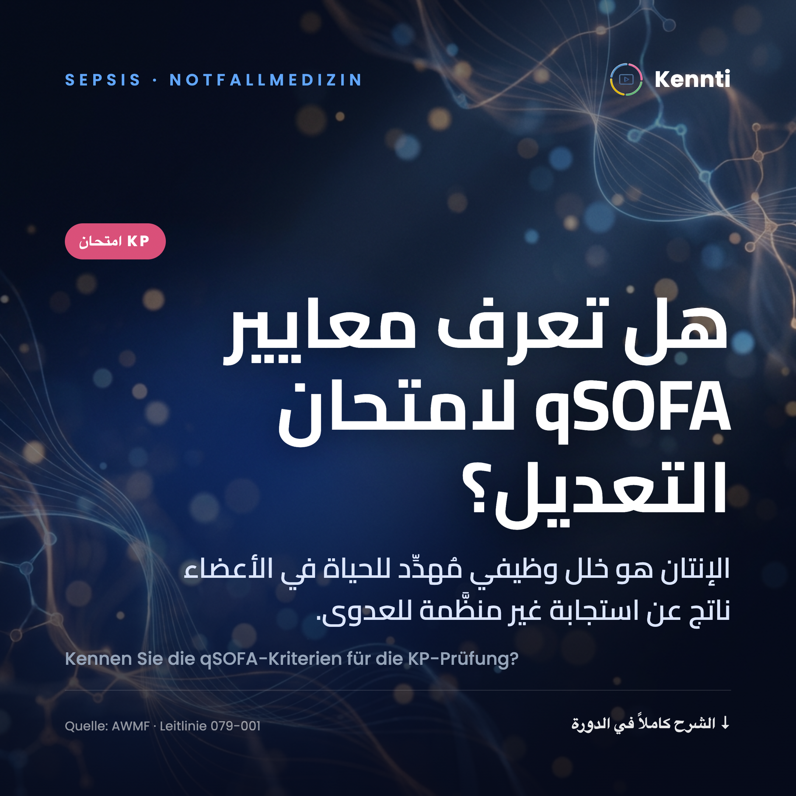
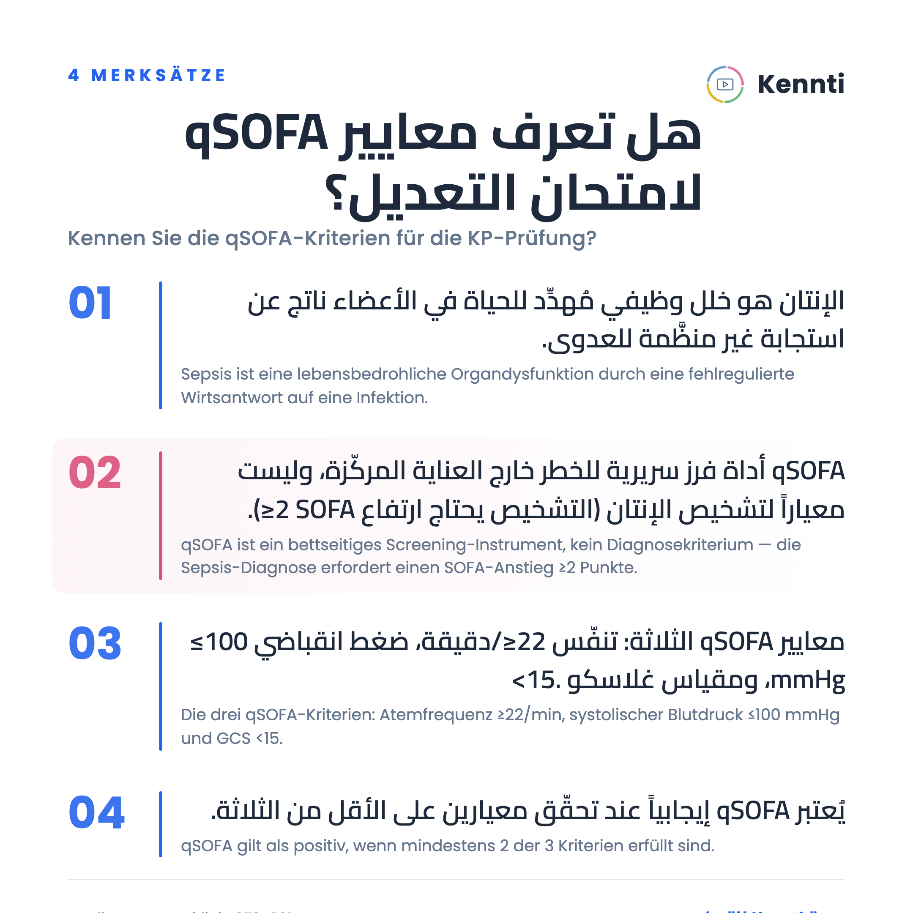
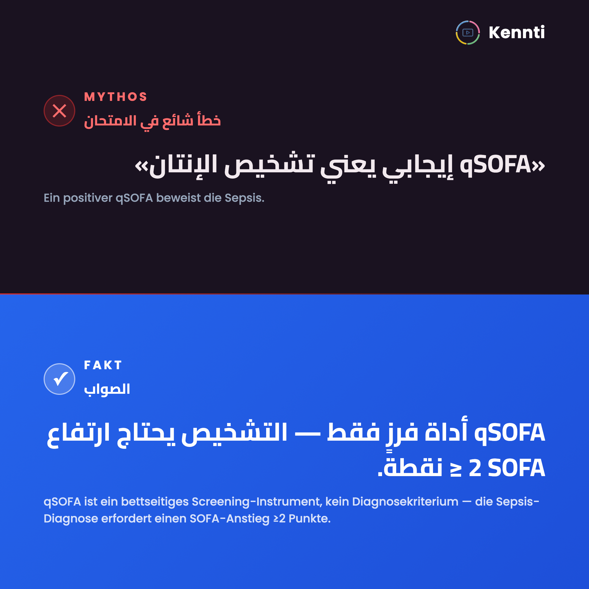
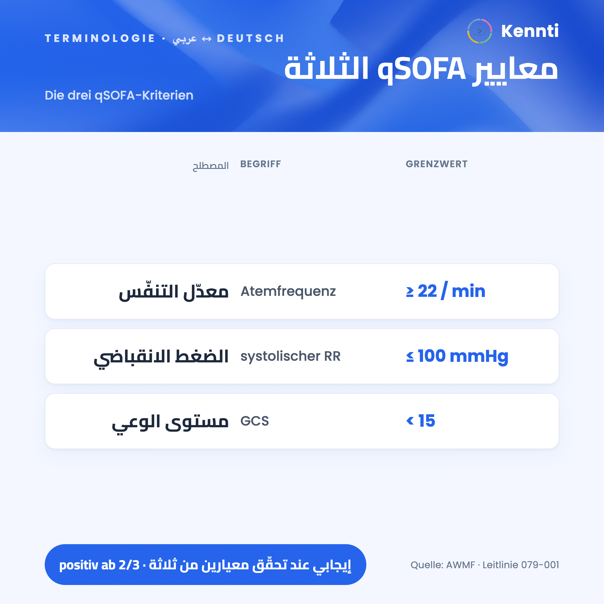
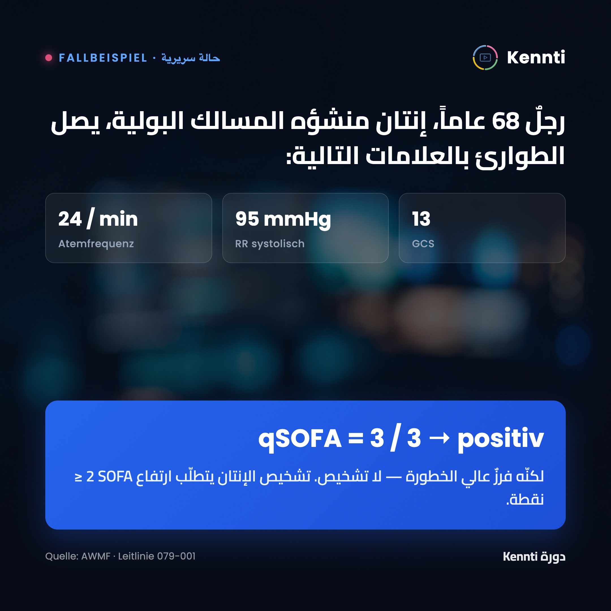

كل النماذج أدناه صفر‑هلوسة: نقاطها KORREKT عبر تأصيل Gemini حيّ + PubMed + مراجعة عدائية، ومصادرها 200، والـ4 بوابات القانونية PASS. المؤطَّر بالوردي مجدوَل. اختر تصميم البوست الأول.
Kennen Sie die qSOFA-Kriterien für die KP-Prüfung?
✅ INDEP 2026-07-12: robust 3-run PASS (4/4 KORREKT, never refuted, src200) + Opus adversarial concept-review clean





Schockformen richtig behandeln: Kennen Sie die Unterschiede?
✅ INDEP 2026-07-12: 4/4 KORREKT (not refuted) src200 + adversarial clean
Wichtige Anamnesefragen beim akuten Abdomen.
✅ INDEP 2026-07-12: 4/4 KORREKT src200 + adversarial clean (2 advisory WARN, non-blocking)
Berufserlaubnis oder Approbation? Kennen Sie den Unterschied?
✅ INDEP 2026-07-12: 3/3 KORREKT src200 (source fixed -> BAEO §10, old 404 replaced) + adversarial clean
Der psychopathologische Befund: Beschreiben statt vorschnell deuten!
✅ INDEP 2026-07-12: 4/4 KORREKT src200 + adversarial clean
آخر تحديث: 2026-07-12 · لا نشر قبل اختيارك وإذنك الصريح.